Vision Intelligence & Biomedical Engineering
Optinex Research Challenges & Phases
We follow a structured R&D path to study ocular properties and develop non-invasive biometric algorithms. Explore each phase below to see our core models, formulas, and visual outcomes.
Decoding the Neural Code
Before we can correct vision, we must understand how the brain processes it. Our research begins at the foundational level: analyzing how visual pathways interpret motion and contrast to distinguish between optical deficits and neurological processing issues.
Motion Contrast Sensitivity
Contrast sensitivity measures the visual system's ability to distinguish objects from their background, a critical indicator of functional vision beyond standard acuity. We utilize Gabor patches—sinusoidal gratings modulated by a Gaussian envelope—to precisely probe spatial and temporal summation mechanisms. By varying the size and duration of these stimuli, we can map the receptive field properties of visual neurons and isolate deficits in specific neural channels.
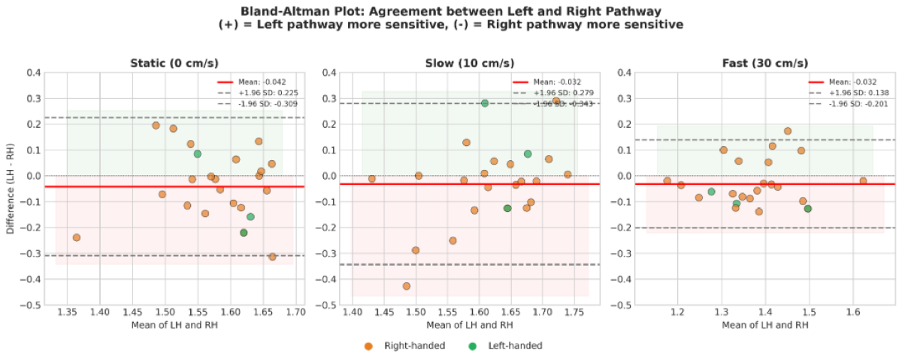
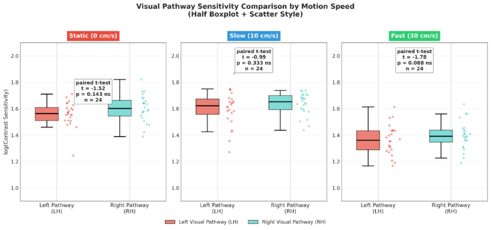
Mysteries of the Eye's 6 Interfaces: Refraction
Myopia progression is closely related to morphological changes in the peripheral retina. We use precise geometric optical modeling and chromatic aberration principles to quantitatively determine the impact of myopia on retinal geometry.
Study 1: Precise Geometrical Optics Modeling & Simulation
Since 2014, we have applied a calculation algorithm to precisely compute all angles of incidence and refraction at 6 refractive surfaces: anterior/posterior cornea, anterior/posterior lens cortex, and anterior/posterior lens nucleus. We map curvature radii (R) and refractive indices (ni, nt) to calculate refraction vectors. According to Snell's Law (ni * sin(theta_i) = nt * sin(theta_t)), by computing the optical path differences (OPD) at each boundary using dynamic ray-tracing, we accurately trace how peripheral retinal shape correlates with systemic myopia development.
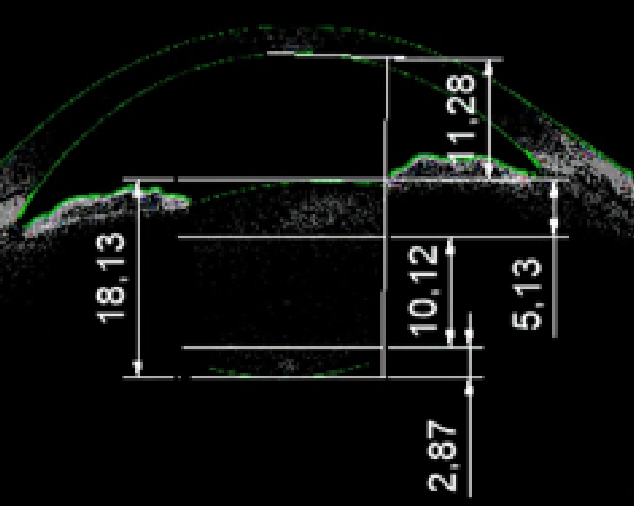
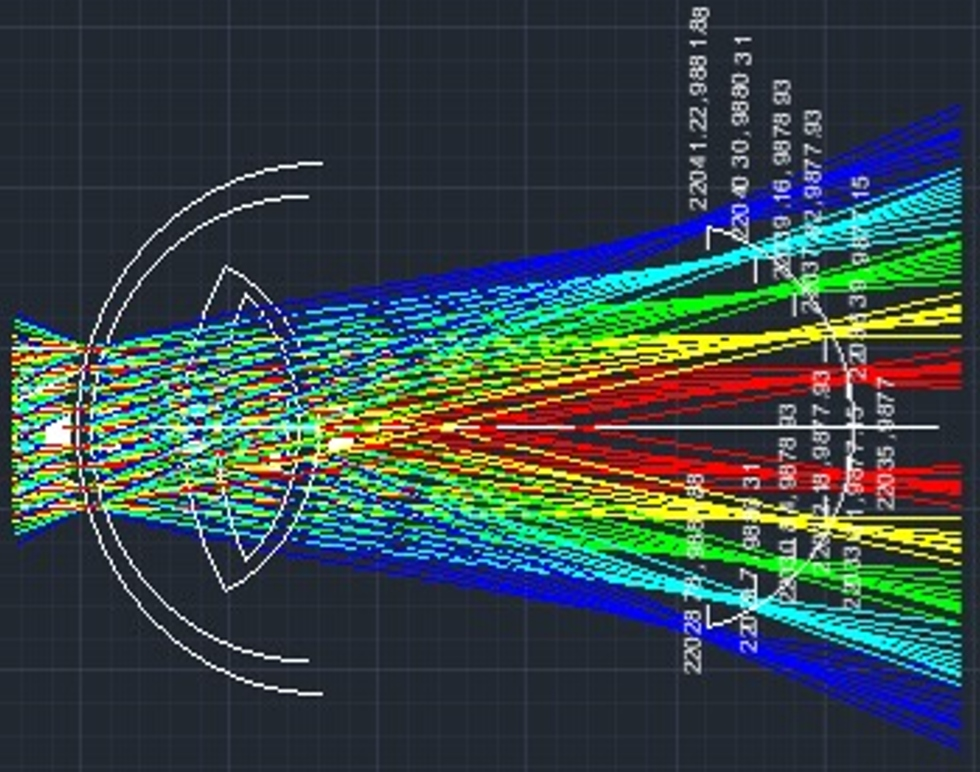
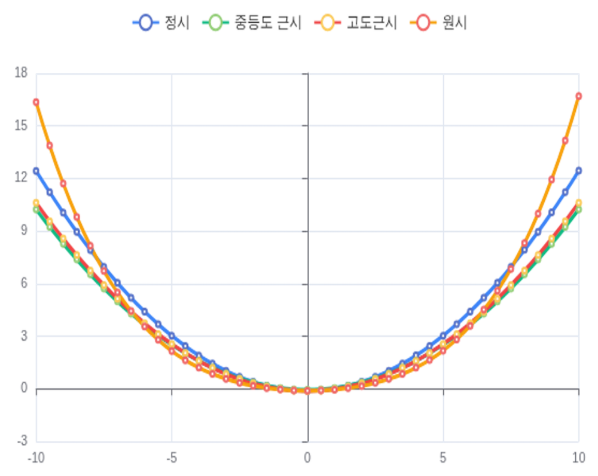
Study 2: Chromatic Aberration-based Peripheral Refraction Measurement
To accurately measure the refractive state of the peripheral retina, we utilize the principle of Longitudinal Chromatic Aberration between Red and Green wavelengths. By projecting concentric flicker stimuli at 8°, 16°, and 32° and measuring subjective focus disparity, we map focal plane curvature deviations without standard subjective autorefractors.
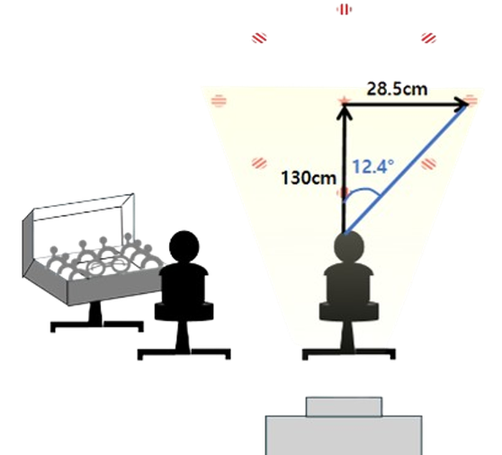
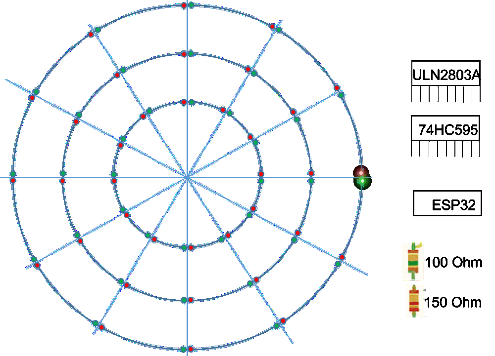
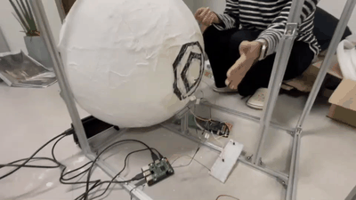
Precision Corneo-Scleral 3D Reconstruction
To fit specialty contact lenses and plan corneal surgeries, mapping the cornea is insufficient—we must capture the entire corneo-scleral topography. We develop high-speed prototype devices to reconstruct this geometry in 3D using Infrared Structured Light.
3D Reconstruction via Structured Light Deformation
By projecting concentric infrared ring patterns onto the ocular surface, we capture pattern deformations with high-speed cameras. Using principles of differential geometry, we calculate height deviations Z(r) at each radius r through the linear proportion Z(r) = delta_d * tan(theta), where delta_d is the local pattern displacement on the camera sensor, and theta is the projection angle. An optimized mesh-fitting algorithm reconstructs the complete 3D corneo-scleral topography in real-time with sub-micron precision, providing automated fitting parameters for clinical partners.
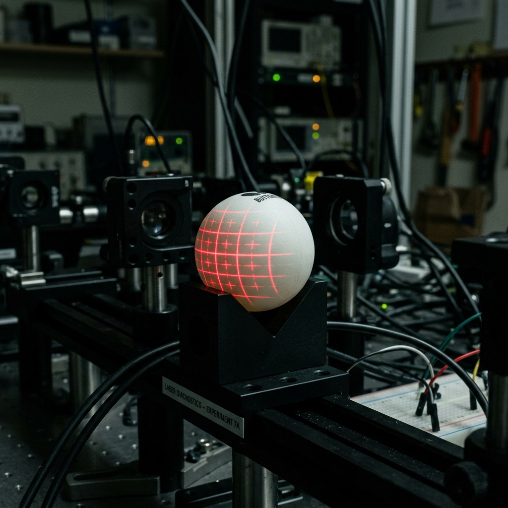
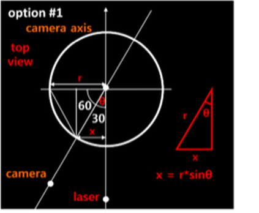
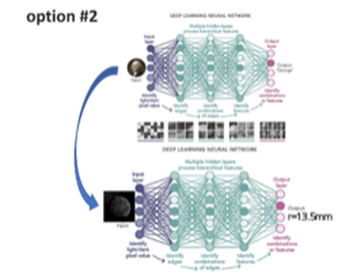
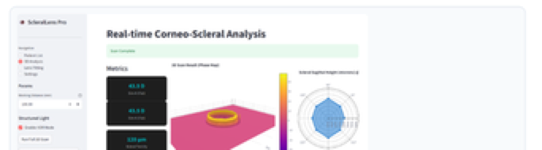
AI-Driven Autonomic Biomarker Screening
The eye is a window to the brain. We capture and analyze dynamic pupil reactions under structured light stimulation, utilizing deep learning algorithms to isolate autonomic biomarker indices for early-stage neurodegenerative diseases.
High-Speed Pupil Tracking & Biomarker Analysis
Using high-frame-rate cameras (up to 120 fps) under infrared illumination, we track pupil contours and capture sub-millimeter oscillations. Our pipeline extracts 10 key autonomic parameters (such as constriction latency and dilation velocity) and 47 high-dimensional biomarkers. We evaluate signal complexity through Sample Entropy metrics to track focal path variations. A reduction in pupil oscillation complexity serves as a non-invasive digital biomarker for early autonomic dysfunction.
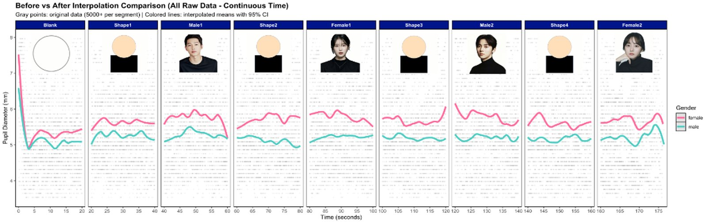
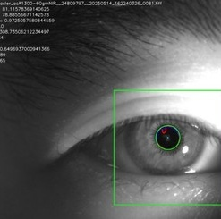
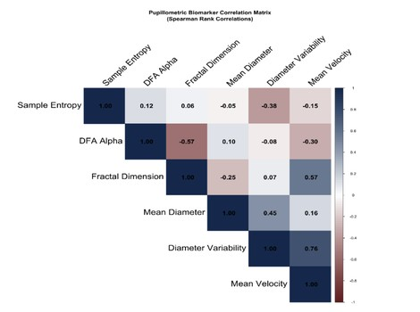
Real-time Edge Ingestion Pipeline
Optinex Research operates an integrated B2B productization workflow connecting hardware edge sensors, autonomous software agents, and remote medical services in a structured tree architecture.
Hardware Stack
- Camera Sensors: Basler acA 1300-60gm NIR, acA 1300-60gc, a2A 1920-160um BAS, FLIR BFS-U3-13Y3M-C, and small camera modules for Raspberry Pi/Jetson
- Optical Lenses: Interchangeable focal lengths of 8mm, 12mm, 16mm, 24mm, and telecentric lenses
- Stimulation Units: LED & Buzzer Scheduler paired with high-output Infrared Light Sources
- Testbeds & SBCs: J4012 developer kit, Jetson Orin Nano Super, and Raspberry Pi 5 + Hailo-8
AI Workstation (optinex-station Compute)
- CPU & Motherboard: AMD Ryzen 9 7950X CPU running on MSI MAG X670E Tomahawk
- GPU Hardware: Palit GeForce RTX 5070 Ti D7 16GB for deep neural network training
- Memory Hardware: G.Skill DDR5-6000 CL30 Flare X5 64GB RAM
Data Ingestion (Internet connection)
- Edge Nodes: Raspberry Pi 5 unit fitted with WD 1TB drive connected via high-speed USB LAN ports
- RAG Vector Database: Automatic ingestion pipeline running ChromaDB to index peripheral retina, myopia control, scleral profile, contrast sensitivity, and low vision literature daily from 09:00 to 22:00
Self-Evolving Agent (Software Architecture)
- Closed-Loop Optimizer: Multi-agent system that index papers, generates novel hardware/SaaS development reports, and updates PyTorch neural weights based on clinical trial feedback
- Telegram Messenger Gateway: Autonomous notification agent sending R&D status reports and decision requests directly to the research lab head
- Productization Endpoints: Direct data routing into encrypted HIPAA databases and certified Clinician Web Portal services
- Real-time ocular biometric scan under dynamic light stimulation
- Noise-free pupil micro-oscillation capture using industrial cameras
- Refraction aberration control via telecentric geometrical lens array
- Primary video frame noise filtering on edge SBC devices
- High-speed local contour preprocessing using hardware neural accelerators
- Zero-latency packet streaming over high-speed USB LAN connections
- Intensive PyTorch deep learning R&D on GPU-accelerated workstation
- Daily automated RAG paper indexing using ChromaDB vector store
- Closed-loop neural weight updates driven by clinical feedback backpropagation
- Secured patient biometric database hosting in HIPAA-compliant cloud vaults
- Sub-micron level 3D corneo-scleral topography height deviation mapping
- Direct diagnostic data delivery to clinician portal dashboards